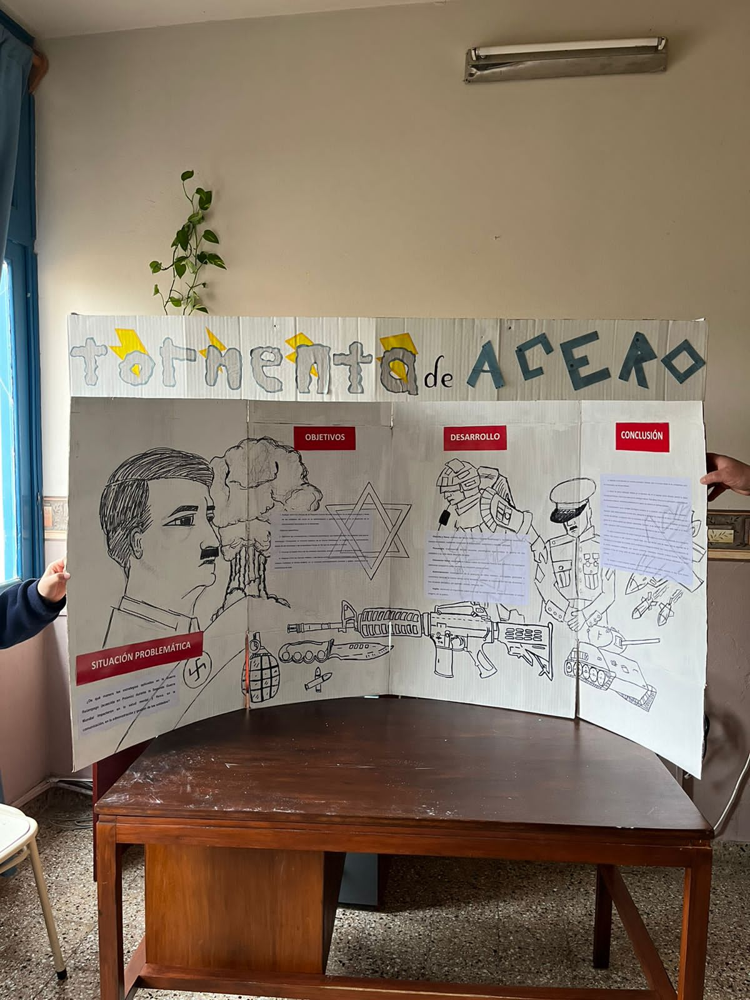

La segúnda Guerra Mundial, tuvo lugar entre 1939-1945 en Europa, entre las potencias imperialistas de este continente. Se enfrentaron Alemania junto a Italia y Japón contra Inglaterra, Francia y posteriormente, con la salida de la URSS de la guerra, Estados Unidos. El conflicto inició por las aspiraciones expansionistas del régimen nazi presidido por Adolf Hitler.
Este enfrentamiento bélico fue protagonizado por la introducción de nuevas tácticas y tecnologías como lo fue la “Blitzkrieg”, mejor conocida como “Guerra Relámpago” ideada en Estados Unidos pero practicada por Alemania. Esta consistía en ataques planeados en el momento, con un bombardeo inicial, seguido del uso de fuerzas móviles, atacando con velocidad y sorpresa para impedir una defensa coherente.
hola
Materias vinculadas
Gestión
La blitzkrieg buscaba sorprender al enemigo con ataques rápidos y decisivos. El OKW coordinaba las operaciones militares de la Alemania nazi bajo Hitler. El Abwehr era el servicio de inteligencia del Heer. El Heer usaba tácticas basadas en misiones en lugar de órdenes específicas. Otros divisiones usaban caballos para transportar equipo pesado y suministros, mientras los soldados marchaban o usaban bicicletas.
Comunicación
Durante la Segunda Guerra Mundial la comunicación fue un factor muy importante, ya que permitió la coordinación militar efectiva, proporcionando inteligencia valiosa a través de la interceptación de mensajes, facilitando la propaganda y la influencia en la opinión pública, ayudando en la movilización de recursos y tropas, e influyendo en el curso de la guerra a través de códigos secretos como el Enigma. En resumen, la comunicación jugó un papel crucial en la planificación, ejecución y resultado de la guerra.
Salud
El entrenamiento físico requerido para luchar en la Segunda Guerra Mundial se basaba en el entrenamiento: físico, marchas y carreras, cuerpo a cuerpo, con armas, en primeros auxilios, etc.
Durante la guerra se generaron varias lesiones y problemas, sea de visión, deshidratación, por explosiones, e hipotermia.
La guerra género el festejo de las paralimpiadas desde el 1948 donde se realizaban carreras de silla de ruedas.
Psicología
Las secuelas psicológicas que experimentaron los soldados después de la Segunda Guerra Mundial, especialmente aquellos que sufrieron torturas y concentración en campos de prisioneros. Estas secuelas incluyen: transformación de la personalidad, disminución de la autoestima, inestabilidad emocional, ansiedad crónica, depresión prolongada, insomnio y pesadillas, disminución del rendimiento funcional
Estos efectos psicológicos duraderos fueron el resultado de las experiencias traumáticas vividas durante la guerra.
Feria de Ciencias

Desde la Coordinación Provincial, se informa que el registro de los proyectos que participarán en la instancia escolar/institucional de la 56.° Feria de Ciencias, Tecnologías, Artes e Innovación. Alberto Maiztegui 2024, a celebrarse el próximo 2 de agosto en todas las instituciones de la provincia de Córdoba, consiste en la exhibición de trabajos realizados en una institución educativa por equipos de estudiantes y docentes de diversas salas/grados/años.